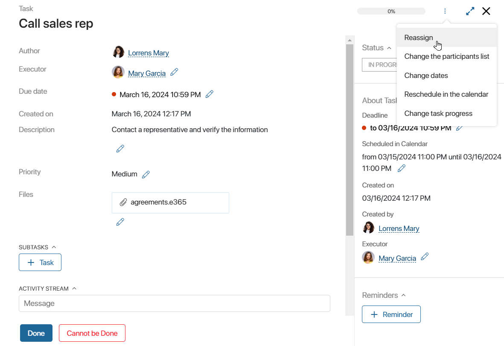
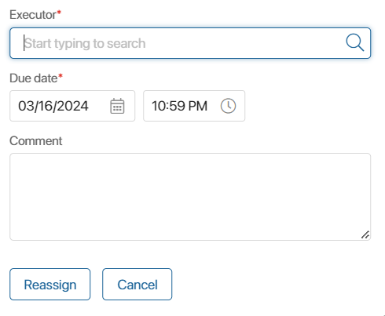
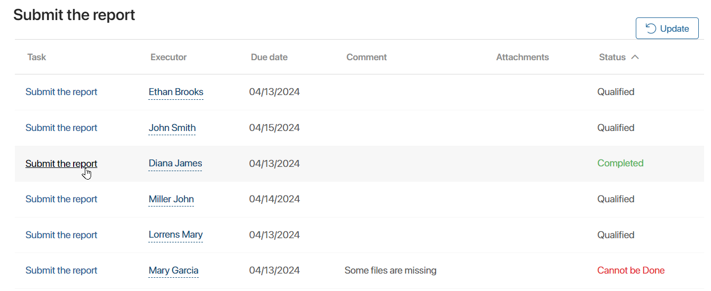
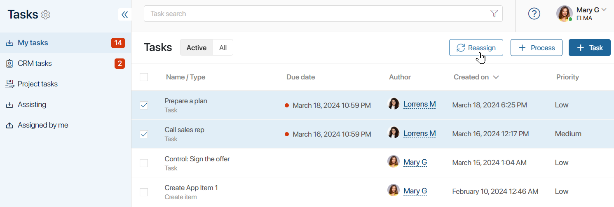
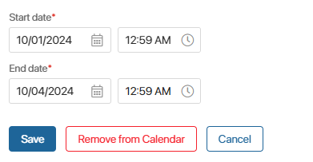
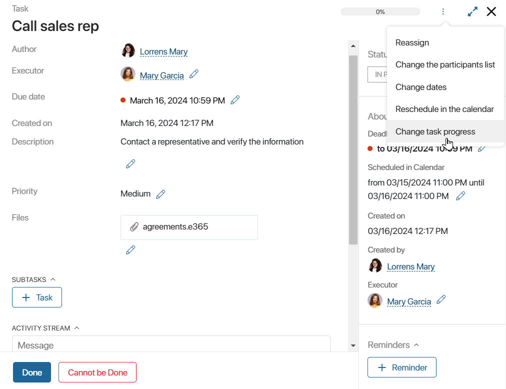
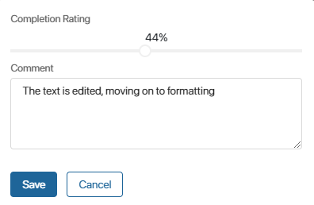
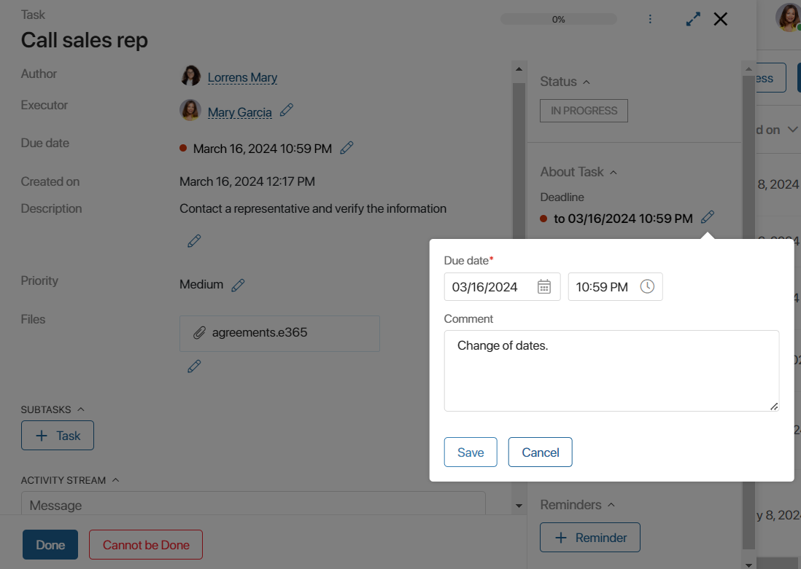

There are various actions available for users who are involved in a task: reassignment, changing the participants list, dates, task progress, etc. Detailed information about actions available to different user roles is provided in Access to tasks and process instances.
To open the list of available actions on a task, click on the three dots in the upper right corner of the page.

Depending on the employee’s role, the list of actions may vary:
- The author can edit task details, reassign it, and change the dates and participants list.
- The executor can reassign, change the priority, participants list, or task progress, and schedule in the calendar.
- The approver can reassign the approval task, schedule it in the personal calendar, change the participants list.
- The supervisor of the author or executor according to the organizational chart can reassign the task to another employee.
- For participants and other system users, there are no available actions with the task. They can only view its page if they are mentioned in the associated activity stream. They can also go to the task from the linked app item if they have the permissions to view this item.
Reassign a task
To delegate a task to another employee, select the Reassign option in the task page menu. A window for selecting a new executor will open.

Start typing the username in the Executor* field. To find a particular employee, click the magnifying glass icon and go to search by parameters.
You can then change the task due date and leave a comment.
In a task with multiple executors, only a specific instance is reassigned, i.e. you can replace one of the executors with any other user.
To change the executor, open any task instance in the list of tasks. In the table, click on the entry where the employee to be replaced is listed as the executor.

On the page of the opened task instance in the upper panel, click , select Reassign, and specify another user.
Please note that it is impossible to change the number of executors after creating a task: you cannot cancel the task for a certain employee or specify additional responsible users. Only participants can be added to the task.
An executor can reassign a task assigned to them in the same way, but cannot change its due date.
Besides, you can simultaneously reassign several tasks in the system. This is convenient, for example, when you need to transfer all the current tasks to a colleague.
To do it, go to the list of assisting tasks and mark all the tasks you want to reassign. Then click Reassign and specify a new executor in the opened window.

After that, all selected tasks will be delegated and disappear from the list, and you will see a corresponding notification in your #Activity stream.
Change the participants list
The author, executor, and approver can add new users to the list of task participants. They are not considered responsible for the task, but they will receive notifications on the task and will be able to correspond in its associated activity stream.
For more details, see Create a new task.
Schedule in the calendar
By selecting this action, you will be able to specify in the calendar when you plan to work on the task. These days do not necessarily have to coincide with the start and end dates of the task.
For example, your boss has given you a deadline of October 7. You have assessed your workload and decided that you will work on this task from October 1 to October 4. These are the dates you will specify when adding the task to your calendar.

Tasks added to the calendar are displayed in the general event counter for the current day.
Thus, the calendar clearly shows your workload and allows you to conveniently plan your working hours, taking into account the appointments and events in the calendar.
Edit the task progress
To ensure that everyone involved in the task understands the stage of the work on it, the executor can specify how many percent of the task is currently completed.
There are several ways to change the task progress on the task page:
- Go to the menu of available actions by clicking the three dots and select Change task progress.
 - Click on the progress bar in the top right corner of the page.

In the opened window, drag the slider to the right or to the left to change the completion percentage.

Leave a comment that will appear in the task activity stream and click Save.
Change the task details
The author of a task can edit its description, add attachments, change the deadline, etc.
To do this, go to Tasks > Assigned by me and click the pencil icon next to the required field, for example, Deadline.

If a task is assigned to several employees, all performers will see the changes. For example, if the due date is postponed, the date will be moved for all of them.
A comment about the changes will be displayed in the task activity stream.
Found a typo? Select it and press Ctrl+Enter to send us feedback